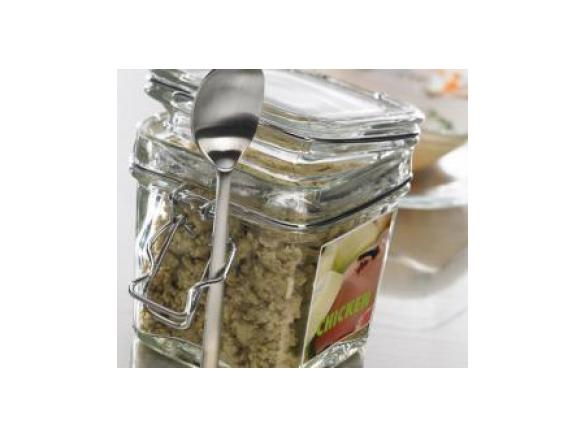

Bulion drobiowy

Składniki
- 300 g nóżek kurczaka, bez skóry, bez kości, bez ścięgien, pokrojonych na kawałki (z ok. 500 g nóżek kurczaka)
- 200 g warzyw, mieszanych, białych (selera, cebuli, czosnku, pora), pokrojonych na kawałki
- 4 gałązki mieszanych ziół, świeżych, (szałwii, rozmarynu, pietruszki), tylko liście
- 150 g soli morskiej, gruboziarnistej
- 100 g białego wina (Opcjonalnie)
- 1 liść laurowy, suszony
- 1 goździk
- 5 nasion kolendry
Przygotowanie
- Do naczynia miksującego włożyć kawałki mięsa kurczaka, rozdrobnić 5 s/obr. 7. Przełożyć do innego naczynia.
- Do naczynia miksującego włożyć wszystkie warzywa i zioła, rozdrobnić 10 s/obr. 5.
- Dodać sól, rozdrobnione mięso, wino, liść laurowy, goździk i nasiona kolendry, gotować 25 min/Varoma/obr. 2, na pokrywkę naczynia miksującego zamiast miarki postawić koszyczek.
- Zdjąć koszyczek, założyć miarkę, zmiksować 1 min/obr. 10. Przełożyć do szczelnie zamknietego słoika, pozostawić do ostygnięcia.
Main Page